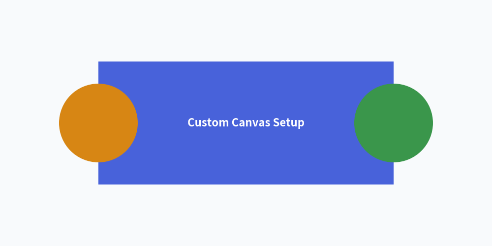

Canvas & Coordinates
The canvas is the foundational drawing surface of Drawlib.
Under the "Illustration as Code" paradigm, canvas dimensions, resolution, background coloring, coordinate grids, and export formats are managed entirely through declarative Python function calls.
1. Imports & Core Lifecycle
Canvas lifecycle functions are imported from drawlib.canvas:
from drawlib.canvas import (
clear, # Reset canvas state between drawings
get_dimage, # Render canvas in-memory and return a Dimage object
initialize, # Alias for clear()
save, # Save drawing to disk (PNG, SVG, PDF, WebP)
setup, # Configure dimensions, grid, background color, and DPI
show, # Display canvas in an interactive GUI window
)
The Canvas Lifecycle Model
Drawlib maintains an active canvas singleton. Drawing functions (rectangle(), line(), text(), etc.) register visual elements to this active canvas before it is saved or rendered:
1. Configure Canvas 2. Draw Elements 3. Output Result
┌───────────────────────┐ ┌──────────────────────┐ ┌────────────────────────┐
│ setup(width, height) │ ────> │ shapes, lines, text, │ ────> │ save() / show() │
│ Set size, grid, bg │ │ smartarts, diagrams │ │ Export to file or view │
└───────────────────────┘ └──────────────────────┘ └────────────────────────┘
▲ │
│ │
└────────────────────────── clear() ────────────────────────────┘
Reset state for next image
[!IMPORTANT] Sequential Scripts & Multi-Image Generation:
If you generate multiple illustrations in a single Python script, always callclear()between images. Otherwise, elements from earlier drawings will bleed onto subsequent canvases.
2. Cartesian Coordinate Space
Drawlib uses a mathematical Cartesian coordinate system:
- Origin
(0, 0): Fixed at the bottom-left corner of the canvas. - X-Axis: Increases horizontally to the right (
0towidth). - Y-Axis: Increases vertically upwards (
0toheight). - Center-Based Anchoring: Coordinates
(x, y)for shapes, text, and icons refer to their exact geometric center by default.

3. Function Reference
3.1. setup()
Configures canvas geometry, resolution, coordinate grids, and background appearance. Must be called before drawing elements.
setup(
width: int | None = None,
height: int | None = None,
dpi: int | None = None,
background_color: tuple[int, int, int] | tuple[int, int, int, float] | None = None,
background_alpha: float | None = None,
grid: bool | None = None,
grid_only: bool | None = None,
grid_style: Style | None = None,
grid_centerstyle: Style | None = None,
grid_xpitch: int | None = None,
grid_ypitch: int | None = None,
)
Parameter Reference:
| Parameter | Type | Default | Description |
|---|---|---|---|
width |
int |
100 |
Canvas width in virtual coordinate units. |
height |
int |
100 |
Canvas height in virtual coordinate units. |
dpi |
int |
100 |
Dots per inch (resolution and raster sharpness). |
background_color |
tuple |
(255, 255, 255) |
Canvas background color as an RGB or RGBA tuple. |
background_alpha |
float |
1.0 |
Background opacity (0.0 = fully transparent, 1.0 = opaque). |
grid |
bool |
False |
Overlays coordinate grid lines for layout alignment. |
grid_only |
bool |
False |
Renders the coordinate grid only without visual shapes. |
grid_style |
Style |
Gray dashed | Custom line style for grid lines. |
grid_centerstyle |
Style |
Bold gray | Custom line style for center axes (x=width/2, y=height/2). |
grid_xpitch |
int |
width / 10 |
Spacing between vertical grid lines. |
grid_ypitch |
int |
height / 10 |
Spacing between horizontal grid lines. |
3.2. save()
Exports the active canvas to an image file on disk.
save(
file: str | None = None,
format: str | None = None,
)
file: Target file path. If omitted, defaults to<script_name>.pngin the directory of the running script.format: File format ("png","svg","pdf","webp"). If omitted, inferred from the filename extension or defaults to"png".
[!NOTE] Handling
save()in Markdown Blocks: In Markdown embedded code blocks (```drawlib), callingsave()is optional because the Document Builder captures the canvas automatically. Ifsave()is called within an embedded block, the engine treats it safely as a no-op to prevent duplicate writes or collisions. However, explicitly includingsave()(without arguments) in complete examples is recommended for 100% copy-paste compatibility with standalone.pyscripts.
3.3. show()
Opens a local interactive desktop window displaying the illustration. In headless environments (CI/CD, Docker, remote servers), use save() or CLI drawlib show -o <path> instead.
3.4. clear() and initialize()
Resets canvas geometry, clears registered artists, and restores default styles. initialize() is an alias for clear().
3.5. get_dimage()
Renders the canvas in-memory and returns a Dimage object, allowing programmatic image transformations, cropping, and chaining without writing temporary files to disk.